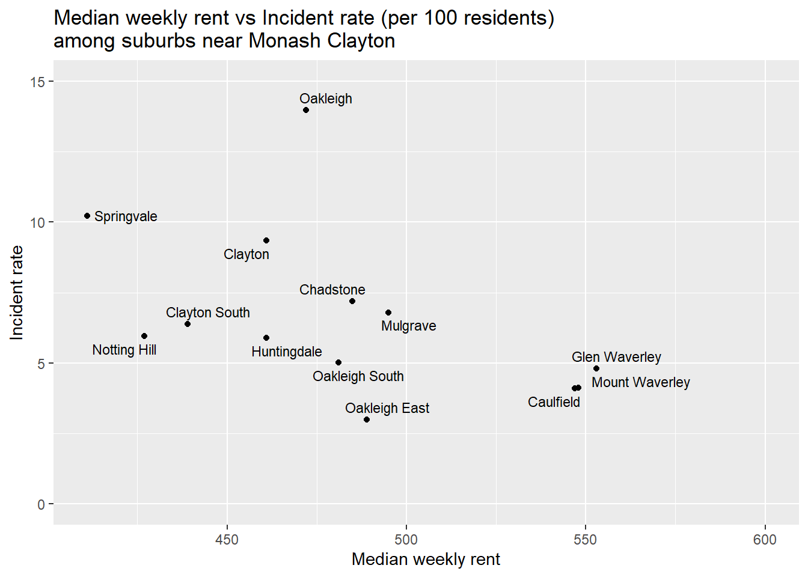

| Data | Source | Objective |
|---|---|---|
| 2021 Census GeoPackages - G01 | ABS | To collect Population of all suburbs in Melbourne. This is used to calculate incident rate per 100 residents |
| 2021 Census GeoPackages - G02 | ABS | To collect Median weekly rent and Geospatial boundaries of all suburbs in Melbourne |
| Recorded Criminal Incidents | CSA | To collect all criminal incidents recorded in Victoria. This is used to calculate incident rate per 100 residents |
| Consumer Price Index | ABS | To adjust 2021 Census Rent data by adding the percentage growth in CPI of rent in Melbourne between 2021 and 2024 |
| Estimated Resident Population | ABS | To adjust 2021 Census Population data to 2024 |
| Metropolitan Melbourne regions and their local government areas | The State of Victoria Department of Environment, Land, Water and Planning (DELWP) | To visualize and compare data by regions |
Are we paying more rent for better security in Melbourne?
Question 1
My question is that: Is there any correlation between rent price and level of security across suburbs in Melbourne?
Question 2 - Data collection
Table 1 summarizes data I collected for this analysis. There are three key data points I need for this analysis, namely rent price by suburb, crime rate by surburb and geospatail boundary of each suburb.
I collected rent price data from 2021 Census GeoPackages - Table G02, where Median weekly rent is provided (2021a). While there are more recent sources of rental prices available, they are either less comprehensive, often missing data on outer areas, or locked behind paywall. 2021 Census is the most complete data source on rental price with true open access. However, since my analysis is anchored in 2024, yet the data is from 2021, I need to adjust rent data using the 2021 and 2024 consumer-price index (CPI) provided by Australia Bureau of Statitistics (2025a).
To calculate the crime rate, defined as incident rate per 100 residents, I needed data on crimes and population in Melbourne. I collected data on all criminal incidents in 2024 from Victoria’s Crime Statistics Agency (CSA). CSA collects recorded crime from Victoria Police to process and release to the public every quarter, thus, is the most up-to-date and official data source on Victoria crimes. Regarding population data, I collected it from 2021 Census GeoPackages - Table G01 (2021a). Similar to rental data, this data is from 2021, thus, needed adjusting by annual population growth rate, which is calculated from Estimated Resident Population (ERP) provided by ABS (2025b).
The 2021 Census GeoPackages also offer geospatial data on suburb level, called Suburbs and Localities (SALs). I use this data to visualize two key variables on a map.
All data from ABS are licensed under Creative Commons Attribution 4.0 International licence, and data from CSA are licensed under Creative Commons Attribution 3.0 Australia license (2025c; n.d.-a)
Question 3 - Methodology
The following data sets are collected and processed to analyse the correlation between rent and security across Melbourne suburbs. For details on the final processed data used for analysis, please refer to README.md and data-dictionary.csv.
Data description: Collection methodology, Limitation, Privacy consideration
Below is an overview of all collected data sets, including their data type, data collection methodology, limitation and privacy consideration.
2021 Census GeoPackages - G01
- Source: ABS
- Data type: Census
- Updated in: 2021
- Latest version: 2021
- Data collection methodology: Every five years, ABS collects information on population and housing from everyone in Australia. Everyone is asked to fill in a question regarding their age, country of birth, religion, housing and work, etc.
- Data limitation: The data is collected in 2021, thus, does not reflect the latest population. To overcome this, I adjust it by adding percentage population growth between 2021 and 2024.
- Data privacy and Ethics: This is aggregated data that ABS has transformed such that it is not easily re-identifiable. Privacy in the data collection process is practiced under several legislation, including Australian Privacy Principles, Privacy Act 1988, Census and Statistics Act 1905, etc. (2021b)
2021 Census GeoPackages - G02
- Source: ABS
- Data type: Census
- Updated in: 2021
- Latest version: 2021
- Data collection methodology:
Every five years, ABS collects information on population and housing from everyone in Australia. Everyone is asked to fill in a question regarding their age, country of birth, religion, housing and work, etc.
- Data limitation:
- The data does not account for different types of rental properties and factors that impact rental prices, such as number of units, number of bedrooms, dwelling types, dwelling size, etc. Therefore, this analysis only treats this variable as a proxy for relative affordability across suburb, but not an absolute guide on rental prices.
- The data is collected in 2021, thus, does not reflect the latest rental landscape. To overcome this, I adjust it by adding percentage growth in CPI between 2021 and 2024.
- The data does not account for different types of rental properties and factors that impact rental prices, such as number of units, number of bedrooms, dwelling types, dwelling size, etc. Therefore, this analysis only treats this variable as a proxy for relative affordability across suburb, but not an absolute guide on rental prices.
- Data privacy and Ethics:
This is aggregated data that ABS has transformed such that it is not easily re-identifiable. Privacy in the data collection process is practiced under several legislation, including Australian Privacy Principles, Privacy Act 1988, Census and Statistics Act 1905, etc. (2021b)
Recorded Criminal Incidents
- Source: CSA
- Data type: Occurrences
- Updated in: Dec-24
- Latest version: Mar-25
- Data collection methodology:
Victoria Police records criminal incidents as they happen, and sends it to CSA. CSA processes this data for analysis and releases to the public every quarter.
- Data limitation:
- By nature, occurrences data only records what was reported and recorded by Victoria Police, but not the entire population. That means there are incidents unreported, hence, unrecorded in the dataset.
- This data includes multiple incident types, including those targeting businesses, cruelty towards animals, and others that might not be of direct interest to renters. However, these incidents also contribute to the area’s overall security, so I decided to include them.
- By nature, occurrences data only records what was reported and recorded by Victoria Police, but not the entire population. That means there are incidents unreported, hence, unrecorded in the dataset.
- Data privacy and Ethics:
The data has undergone aggregation and de-identification by CSA. Their explanatory note provides specific k-anonymity and other rules to handle data confidentiality (n.d.-b).
Consumer Price Index
- Source: ABS
- Data type: Sample
- Updated in: Dec-24
- Latest version: Mar-25
- Data collection methodology: ABS samples rental prices from real estate agents, State housing authorities, Centrelink and Department of Defence, and updates CPI quarterly.
- Data limitation: The data does not account for different types of rental properties and factors that impact rental prices, such as number of units, number of bedrooms, dwelling types, dwelling size, etc.
- Data privacy and Ethics: This is aggregated data on State level, so there is no risk of re-identification.
Estimated Resident Population
- Source: ABS
- Data type: Estimation
- Updated in: Dec-24
- Latest version: Dec-24
- Data collection methodology: ABS estimates population based on adjusted 2021 Census and estimated birth, death and migration. The data is published quarterly.
- Data limitation:
- This data is estimated by ABS and has not been revised and finalized. Therefore, it may contain errors. However, the impact is minimal for this analysis.
- It is estimated at State level and does not account for local demographic variation.
- This data is estimated by ABS and has not been revised and finalized. Therefore, it may contain errors. However, the impact is minimal for this analysis.
- Data privacy and Ethics: This is aggregated data, and ABS has no access to individual information as they depend on State authorities to aggregate data. Where Census data is involved, ABS complies with the Census and Statistics Act 1905 (2025c).
Metropolitan Melbourne regions and their local government areas
- Source: DELWP (DELWP (The State of Victoria Department of Environment & Planning), 2017)
- Data type: -
- Updated in: 2017
- Latest version: 2017
- Data collection methodology: This is a pdf map of LGAs and their respective metropolitan region. I mapped them onto a dataframe.
- Data limitation: The data is presented in a pdf map for human to read, and there is no official data set containing similar information.
- Data privacy and Ethics: Not applicable
Calculation and assumptions
Estimate Median weekly rent for 2024
Median weekly rent in 2024 is calculated by multiple 2021 Census median weekly rent by Rent growth rate, which is defined as percentage change in CPI between 2021 and 2024.
\[ 2024\_median\_weekly\_rent = 2021\_median\_weekly\_rent * (1 + 2021\_CPI/2024\_CPI) \]
Assumptions: CPI is an estimate on State level, including both metropolitan and regional areas. I assume this is a good reflection of how rental price changes within Melbourne metropolitan areas.
Estimate Population for 2024
Population in 2024 is calculated by multiplying 2021 Census population by Population growth rate between 2021 and 2024. \[ 2024\_population = 2021\_population * (1 + 2024\_ERP/2021\_population) \]
Assumptions: While 2024 estimated population exists, they are not presented by suburb. Therefore, I need to calculate the population growth rate between 2021 and 2024 by assuming the reliability of this population estimate.
Calculate Incident rate per 100 residents
\[ incident\_rate = (incident\_counts/2024\_population)*100 \]
Harmonising suburbs and local government areas between Census data and CSA data
Assumption: There exists multiple suburbs that extend to more than one local government area (LGA) and metropolitan region, creating duplications when merging CSA data with Census data. This is because CSA data is presented by suburbs and LGAs, while Census data is presented by suburbs only. While this does not impact any calculation, it creates duplication during visualization.
Therefore, where duplications among extended suburbs happen, I keep the first entry and assume that the suburb only belongs to one LGAs or metropolitan region.
Question 4 - Data transformation
Import data
# This code chunk shows how I imported data originally. However, due to data size exceeding github limit, I had to delete the GeoPackages and saved an alternative of just median_rent and population
# Import GeoPackage data on Median weekly rent (G02) and Population (G01)
geopath_2021_G02 <- here::here("data/raw/Geopackage_2021_G02_VIC_GDA2020/G02_VIC_GDA2020.gpkg")
median_rent <- read_sf(geopath_2021_G02, layer = "G02_SAL_2021_VIC") |>
select(SAL_CODE_2021, SAL_NAME_2021, Median_rent_weekly, geom) |>
clean_names() |>
filter(!(sal_code_2021 %in% c("SAL29494", "SAL29797")))
geopath_2021_G01 <- here::here("data/raw/Geopackage_2021_G01_VIC_GDA2020/G01_VIC_GDA2020.gpkg")
population <- read_sf(geopath_2021_G01, layer = "G01_SAL_2021_VIC") |>
select(SAL_CODE_2021, SAL_NAME_2021, Tot_P_M, Tot_P_F, Tot_P_P, geom) |>
clean_names() |>
filter(!(sal_code_2021 %in% c("SAL29494", "SAL29797")))
st_write(median_rent, "data/raw/census-median-rent.gpkg", delete_dsn = TRUE)
st_write(population, "data/raw/census-population.gpkg", delete_dsn = TRUE)# Actual code that import GeoPackage data
median_rent <- read_sf("data/raw/census-median-rent.gpkg")
population <- read_sf("data/raw/census-population.gpkg")# Import CPI data from ABS
cpi <- read_excel(here::here("data/raw/abs-cpi-by-capital city.xlsx"),
sheet = "Data1", skip = 9) |>
select(`Series ID`, A2331841F) |>
rename(period = `Series ID`, rent_cpi = A2331841F)# Import population data from ABS
erp_population <- read_excel(here::here("data/raw/abs-population.xlsx"),
sheet = "Table_5", skip = 4)
# Select the appropriate data range
erp_population <- erp_population |>
select(1, 3) |>
rename(year = `...1`, population = Victoria) |>
slice(59:76) |>
filter(row_number() %in% c(1:6, n())) |>
mutate(year = ifelse(year == "September", 2024, year))# Import crime data from CSA
incidents <- read_excel("data/raw/Data_Tables_LGA_Criminal_Incidents_Year_Ending_December_2024.xlsx", sheet = "Table 03") |> clean_names()# Map LGA to their respective region
metro_lga_regions <- list(
"Inner Metro Region" = c("Melbourne", "Port Phillip", "Yarra"),
"Inner South East Region" = c("Stonnington", "Bayside", "Boroondara", "Glen Eira"),
"Western Region" = c("Melton", "Brimbank", "Hobsons Bay", "Wyndham", "Moonee Valley", "Maribyrnong"),
"Northern Region" = c("Banyule", "Whittlesea", "Nillumbik", "Hume", "Moreland", "Darebin", "Mitchell"),
"Eastern Region" = c("Manningham", "Whitehorse", "Knox", "Yarra Ranges", "Maroondah", "Monash"),
"Southern Region" = c("Kingston", "Frankston", "Cardinia", "Casey", "Greater Dandenong", "Mornington Peninsula")
)
# Convert to dataframe
metro_lga<- enframe(metro_lga_regions, name = "region", value = "lga") |>
unnest(cols = lga)
#write_csv(metro_lga, "data/processed/metro-lga.csv")Harmonize suburb name between census and CSA
# List of duplicated suburbs (different suburbs with same name but different LGA)
duplicated_suburb <- median_rent |>
st_drop_geometry() |>
distinct(sal_code_2021, sal_name_2021) |>
mutate(suburb_base_name = str_remove(sal_name_2021, " \\(.*Vic\\.\\)"),
lga = str_extract(sal_name_2021, "(?<=\\().+(?= - Vic\\.)"),
is_duplicated = suburb_base_name %in% suburb_base_name[duplicated(suburb_base_name)],
suburb_full_name = ifelse(
is_duplicated,
str_remove(sal_name_2021, " - Vic\\."),
str_remove(sal_name_2021, "\\s*\\(.*\\)")
) |> str_trim())
# List of extend suburbs (the same suburb but extend to more than 1 LGA)
extend_suburb <- incidents |>
distinct(local_government_area, suburb_town_name) |>
mutate(
across(c("suburb_town_name", "local_government_area"), ~str_trim(.x)),
suburb_lga_paste = paste0(suburb_town_name, " (", local_government_area, ")")) |>
left_join(duplicated_suburb, by = c("suburb_lga_paste" = "suburb_full_name")) |>
filter(is.na(is_duplicated)) |>
mutate(is_extend = suburb_town_name %in% suburb_town_name[duplicated(suburb_town_name)]) |>
select(local_government_area, suburb_town_name, is_extend)
# Combine to get the final suburb - LGA dictionary
suburb_lga_dict <- duplicated_suburb |>
filter(!is_duplicated) |>
left_join(extend_suburb, by = c("suburb_base_name" = "suburb_town_name")) |>
bind_rows(duplicated_suburb |> filter(is_duplicated)) |>
mutate(lga = coalesce(lga, local_government_area)) |>
select(-local_government_area) |>
left_join(median_rent |> select(sal_code_2021, geom), by = "sal_code_2021") |>
left_join(metro_lga, by = "lga") |>
mutate(region = coalesce(region, "Regional"))
#write_csv(suburb_lga_dict, "data/processed/suburb-lga-dict.csv")Estimate population in 2024 by suburb
Estimate median rent in 2024 by suburb
cpi_2021 <- cpi |>
filter(period == ymd("2021-12-01")) |> select(rent_cpi) |> pull()
cpi_2024 <- cpi |>
filter(period == ymd("2024-12-01")) |> select(rent_cpi) |> pull()
est_median_rent <- median_rent |>
mutate(median_rent_weekly = round(median_rent_weekly*cpi_2024/cpi_2021))Calculate crime rate
# Aggregate incidents by suburb
incidents_per_suburb <- incidents |>
filter(year == 2024) |>
left_join(suburb_lga_dict, by = c("local_government_area" = "lga", "suburb_town_name" = "suburb_base_name")) |>
group_by(suburb_full_name) |>
summarise(incident_counts = sum(incidents_recorded))# Combine median, population and incidents and Calculate incident rate
census_csa <- est_median_rent |>
st_drop_geometry() |>
left_join(est_pop, by = c("sal_name_2021", "sal_code_2021")) |>
left_join(suburb_lga_dict |> distinct(sal_code_2021, suburb_full_name, region),
by = "sal_code_2021") |>
left_join(incidents_per_suburb, by = "suburb_full_name") |>
mutate(incident_counts = coalesce(incident_counts, 0),
incident_rate = incident_counts/tot_p_p*100)
# Downscale to metropolitan region
census_csa_metro <- census_csa |>
filter(region != "Regional") |>
distinct(suburb_full_name, .keep_all = TRUE) |>
st_as_sf(sf_column_name = "geom")
#st_write(census_csa_metro, "data/processed/census-csa-metro.gpkg", delete_dsn = TRUE)Merge Suburb boundary to Region boundary
region_boundary <- census_csa_metro |>
group_by(region) |>
summarise(region_geom = st_union(geom))
#st_write(region_boundary, "data/processed/region-boundary.gpkg", delete_dsn = TRUE)Why am I looking at rent and security?
Since 18, I have moved 4 cities across Asia, Europe and now Australia, plus travelled to several countries in these continents. Uprooting my life every (other) year is fun, but it’s also a lot of work, especially when it comes to finding a place to stay. I often find myself looking for accomodation without having set foot in the country and understanding how it is like to live there.
As a young female who mostly travels solo, one of my most important criteria is neighborhood safety. From my experience, more secured areas tend to be more expensive. However, I am a self-funded student, whose budget can only go so far, therefore, often find myself struggling to balance between security and affordability.
That is why I think it would be an interesting attempt to validate my struggle by actually looking at the rent and crime rate in Melboure and answer the question: Is it really more expensive to live in safer areas? Or are we really paying more rent for better security?
My questions
I attempt to break down the big question of “Are we paying more rent for better security in Melbourne?” into smaller sections as follows:
- How is the distribution of rent (measured by median weekly rent) across suburbs in Melbourne?
- How is the distribution of crime rate (measured by incident rate per 100 residents) across suburbs in Melbourne?
- Is there any correlation between rent and crime rate among Melbourne suburbs?
- As a student in Monash Clayton, what are the best suburbs that balance rent, security and approximity to campus?
I measure rent by median weekly rent, and crime rate by annual incident rate per 100 residents. For example, if the suburb has a population of 100 and the crime rate is 2, there are 2 criminal incidents happening in a year.
Where did I get my data?
Median weekly rent of all suburbs in Melbourne can be accessed via 2021 Census on Australia Bureau of Statistics (ABS) website (2021a). I further adjusted this data to reflect rent in 2024 by calculating the percentage change in consumer price index (CPI) between 2021 and 2021 (2025a).
To calculate crime rate for each suburb, I collected data on number of incidents and offences in Melbourne in 2024 from Victoria’s Crime Statistics Agency (CSA), and population data of all suburbs from 2021 Census (2021a; 2024). Since population was in 2021, I further adjusted this data to reflect 2024 population by adding ABS’s annual percentage change in Victorian population (2025b).
Details on data collection and transformation can be found in Data details section.
What does the data tell me?
Before investigating the relationship between rent and security, let’s have a look on how rent and crime rate distribute differently across Melbourne.
Median weekly rent across Melbourne
It is surprising to me that the difference in rent across Melbourne is quite subtle, and there are few areas with outstandingly high rent.
However, there still exists the inner and outer contrast, such that as distance from the CBD increases, especially towards northwest, northeast and southeast, the median weekly rent drops. Notably, the Western and further Northen and Southern regions are more affordable compared to the Inner South East and parts of Eastern closer to CBD. These areas are home to some of the most wealthiest population in Melbourne (e.g., Brighton, Toorak, Canterbury, Balwyn, etc.)
If we take a closer look at top 20 suburbs with the highest and lowest median rent, the result is consistent with the color distribution on the map. Most surburbs in the highest 20 group are from the CBD and Inner South East, while Western suburbs dominate the lowest 20 group.
Crime rate across Melbourne
I define crime rate as annual incident rate per 100 residents.
Figure 1 shows the incident rate in each suburb in Melbourne, with the blue border separating regions. Overall, the outer areas of all region seem to have a similar range of low incident rate, with a few outliers concentrating in the Western region. However, it is hard to see how secured the central areas in this plot because it is too small. So, let’s zoom in a bit.
The CBD has the highest crime rate, with incident rates of all suburbs uniformly staying at the higher end. This is understandable as CBD is the center of commercial activities happen, and generally speaking, areas with a lot of people and activities are bound to have more incidents.
We can also see a difference between the West and the East here. The West has a slightly deeper color, meaning that there are more crimes there, compared to the East.
Note that there are a few outliers with significantly higher incident rate. These are mostly industrial or commercial areas, with little residents but high volumes of daytime activities, inflating the crime rate. For example, Somerton, Tottenham, Laverton North are all predominantly industrial, and Essendon Fields, Melbourne Airport and Moorabin Airport are transport hubs.
Rent VS Crime rate
From what we have seen, my initial hunch was that there was a small correlation between rent and crime rate, except for the CBD. Areas with the higher rent like Inner South East and Eastern regions happen to have lower incident rate as seen in Figure 2.
However, to my surprise, there is no correlation in any of the region!
The majority of suburbs fall into the median weekly rent and median incident rate range for their respective region. And the points are distributed vertically across the incident rate, independent of median weekly rent.
Suburb recommendation for students at Monash Clayton
If there is no correlation between rent and security, why bother making a recommendation based on rent and security? It is because if budget is not a restriction for security, we’d better find an affordable and secured suburb to live in!
I narrowed my analysis down to suburbs close to Clayton campus, as recommended on Monash website (n.d.-c). I also added Caulfield because the commute from Caulfield and Clayton is very convenient, and it is a greater suburb to stay in if you want to enjoy a bit of student life.

Based on Figure 4, I think the best options that balance rent and security are Notting Hill, Clayton South, Clayton and Huntingdale. These suburbs offer good price and incident rate on the lower side. If your budget can stretch a bit more, Glen Waverley, Mount Waverley and Caulfield are great options for security. In my opinion, these suburbs have a lot more happening, hence, more fun to live in as well. Despite reasonable price, you might want to avoid Springvale and Oakleigh due to higher incident rate.
Key takeaways
In summary, my worry to pay higher rent for more secured suburbs is unnecessary because the analysis shows no correlation between rent and incident rate. However, there are a few useful insights we can take away from this analysis:
- Since there is no correlation between rent and security, we should all strive to find an affordable place with great security.
- Avoid living in the West if you can live in the South East and East because there are more crimes in the West.
- CBD is a fun place to hang out with your friends, but might not be a great place to live in because of the high rent and low security compared to surrounding suburbs.
- If you are a Monash Clayton student, consider Notting Hill, Clayton South, Clayton and Huntingdale as your top choices when looking for a new place to stay. If you have a bigger budget, you can consider Caulfield, Glen Waverley and Mount Waverley as well.
What’s next in the agenda?
Beyond rent and security, my bigger question is: Which suburbs should I live in Melbourne? While I have found an answer from the security perspective in this analysis, there are a lot more to consider when it comes to looking for a place to stay, e.g., distance to key points of interest, availability of public transports, accessibility to amenities and entertainments, etc.
Therefore, this analysis is a small part of my bigger project where I develop a more comprehensive scorecard to assess suburbs based on criteria commonly considered when people find their accomodation.
References
Australian Bureau of Statistics. (2021a). 2021 Census GeoPackages. https://www.abs.gov.au/census/find-census-data/geopackages?release=2021&geography=AUST&table=G01&gda=GDA2020
Australian Bureau of Statistics. (2021b). 2021 Census Privacy Statement Australian Bureau of Statistics. Australian Bureau of Statistics. https://www.abs.gov.au/about/legislation-and-policy/privacy/privacy-abs/2021-census-privacy-statement
Australian Bureau of Statistics. (2025a). Consumer Price Index, Australia, March Quarter 2025 Australian Bureau of Statistics. Australian Bureau of Statistics. https://www.abs.gov.au/statistics/economy/price-indexes-and-inflation/consumer-price-index-australia/latest-release
Australian Bureau of Statistics. (2025b). National, state and territory population, December 2024 Australian Bureau of Statistics. Australian Bureau of Statistics. https://www.abs.gov.au/statistics/people/population/national-state-and-territory-population/latest-release
Australian Bureau of Statistics. (2025c). Website privacy, copyright and disclaimer Australian Bureau of Statistics. Australian Bureau of Statistics. https://www.abs.gov.au/website-privacy-copyright-and-disclaimer
Crime Statistics Agency. (n.d.-a). Copyright. Retrieved June 1, 2025, from https://www.crimestatistics.vic.gov.au/copyright
Crime Statistics Agency. (n.d.-b). Explanatory notes. Retrieved June 1, 2025, from https://www.crimestatistics.vic.gov.au/about-the-data/explanatory-notes
Crime Statistics Agency. (2024). Download data [Publication]. https://www.crimestatistics.vic.gov.au/crime-statistics/latest-victorian-crime-data/download-data
DELWP (The State of Victoria Department of Environment, W., Land, & Planning). (2017). Metropolitan Melbourne regions. https://www.planning.vic.gov.au/__data/assets/pdf_file/0026/628361/plan-melbourne-map-metro-melbourne-regions.pdf
Monash University. (n.d.-c). Clayton Campus - Accommodation. Retrieved June 1, 2025, from https://www.monash.edu/accommodation/students/off-campus-support/clayton-campus
Question 5:
Tell us about parts of your data processing or analysis that weren’t “sexy” and wouldn’t typically be included in a blog post. (e.g. Was their any data drudgery or time intensive wrangling? Were there any repetitive tasks or manual tasks? If it was easy, describe what made it easy?)
The most challenging part during data processing was aligning suburb names between the GeoPackages and CSA datasets to calculate incident rates. Initially, I assumed that since both datasets were at the suburb level, merging would be straightforward.
However, I soon discovered that there are several different suburbs with the same name, and suburbs that extend to more than 1 LGA. While the primary key of GeoPackages data is suburb level, those of CSA data are suburb and LGA. That meant I had to figure out which suburb belongs to which LGA in order to merge these two data sources together.
With no official mapping available, I had to create one myself. I considered two approaches: (1) calculating geographical overlaps using the spatial data, or (2) manually deriving logical patterns between the datasets. While the first solution sounded comprehensive, it was so computationally heavy that my laptop kept crashing. This left me with the second solution and the next 5 hours mapping the logics and navigating several edge cases to finally figure out the best way to merge these data using a suburb - LGA dictionary. While some missing data exists in LGAs for certain suburbs, the dictionary was sufficient enough to proceed with the analysis.
Question 6:
Were there any challenges that you faced in conducting this analysis. These may take the form of data limitations or coding challenges? (e.g. Was there anything in your analysis that you were not anticipating when you started? Did you have to change your intended scope? Did you need to master a new skill? Were there any problems you were proud of solving?)
As I’m still new to Melbourne, I lack the knowledge of Melbourne suburbs to make a meaningful intepretation of the data. This was even a bigger challenge when my initial scope was the entire Victoria. I decided to downscope the analysis to Metropolitan Melbourne to make it more relevant to my personal needs, and I had to research a lot of different areas in Melbourne to deepen my insights.
Map visualization is another challenging aspect. I attempted to plot choropleth map of Melbourne suburbs, enriching with region boundaries. However, it was hard for me to figure out the right color scale and combination that make these map easy to the eyes, while highlighting the regional differences.
An unexpected challenge is about the volume of data documentation that goes with this analysis. I used quite a few data sources and performed a few computations with assumptions in the analysis. However, I was overly confident that it would not take long for me to document everything on data collection, processing, data dictionary, etc. because I remembered all the details and reasonings by heart. Thus, I grossly underestimated the amount of time I needed to document my data collection, limitation, and processing. It’s a lesson learnt for me to document things as I go, instead of leaving it to the last minute.
Question 7:
Tell us about any imperfect parts of your work and how you would like to expand or improve this analysis in future? Be clear about any limitations or aspects of your analysis that fell beyond scope.
Despite my effort to take the choropleth plots look good, I am still unhappy with the way they look. I was looking for something more clear, elegant and consistent across two plots, but time limitation did not allow.
As mentioned at the end of my blog, my core question remains: Which suburb should I live in Melbourne? I’d love to develop a scorecard that assess Melbourne suburb based on different criteria, such as public transport, distances to key destination (e.g., university, CBD), the number of shops and cafes nearby, etc. Ideally, this would involve a data pipeline that scrapes live data, stores it in a database, and powers a web app where users can set their preferences to get personalized suburb recommendations.
This would be a very interesting project to pursue, yet a very challenging one time-wise and financial-wise. This project will require significant time and effort to gather and process data. Additionally, spatial data on businesses is not freely available as APIs from Google Map and Apple Map are charged. Even hosting a database comes with limitations on free tiers.
Question 8:
Also submit 4 earlier versions of your assignment that show your iterative process. These should be your messy versions and include exploratory code. We recommend you save these files as you progress through your assignment. Provide a short overview for markers of what you fixed/learnt/improved/changed between each file. (If you are comfortable with GitHub you may submit your Github repo, but please refer to individual commits.)
ca48517 (HEAD -> main) add reflection 2783b81 add readme.md d4b1411 add data dictionary cd3aca1 data description and assumption added 6b68e01 data collection done 0897554 finish the blog post 88a8931 beautify the plots 9ba993f scale down to metro area, add more graph specific to clayton 78385f1 add metropolitan regions 42e537e merge census and csa, calculate crime rate 59765fd finish harmonizing suburb names f9cbf9e import raw data a3d5cd0 (origin/main) add r project f6adc3f initial commit